Jot — Design System.
The live design system, extracted directly from the shipped iOS + watchOS code (build 72, marketing 1.0.3).
Brand colors
blue — PRIMARY BRAND
#1A8CFF → #0064CC (jotBlueTop → jotBlueBottom)
The brand color, used across the whole core app: Dictate FAB, Recents accents (sparkline, LATEST tag, avatar, Jot mark), Recording, Ask, Transcript Detail, Settings, Donations, action bars, keyboard Dictate pill.
coral — AI + Wizard ONLY
#FF6B57 → #E0533F
Scoped to the AI/Rewrite screens and the Setup Wizard. NOT the brand color — never used on core surfaces.
jotRecord
#FF3B30
Stop button, draft caret
jotRecordingDot
#E0173B + halo .18
Live recording dot
Page & text (light · dark adaptive)
jotPageBase
#D1D3DA · #15171C
Page wallpaper base (matches keyboard chrome)
jotPageInk
#15171C · #FFF .96
Primary text
jotPageInkSecondary
#3C3C43 .72 · #FFF .62
Sub-labels, row subtitles
jotPageInkCaption
#3C3C43 .62 · #FFF .46
Section labels, captions
jotInk (editorial)
#1C1C1E · #FFF .96
Editorial body ink
jotMuteWeak
#C7C7CC · #FFF .30
Chevrons, dividers
Status
jotSuccess
#34C759 (ink #1B8E3E)
"Ready" pills, "on" toggles
jotWarning
#FF9F30 (ink #B87314)
Warning pill dot/border
Semantic icon tiles (Settings & Wizard) — top → shaded bottom gradient
Speech
#1A8CFF
Vocabulary
#1FCED1
AI
#FF6B57
On-device
#34C759
Full Access
#7C5CFF
Mic Ready
#FF9A33
Help
#1FCED1
Feedback
#7C5CFF
Version
#8B8E96
Donations
#34C759
Backup
#007AFF
Acknowledge
#FF4F6B
Tile = rounded square (~28% corner radius),
linear-gradient(180deg, color, shade −18%), inset top highlight rgba(255,255,255,0.35), soft shadow + 0.5px hairline.Typography — editorial (Fraunces)
editorialDisplay · Fraunces SemiBold 38
Recents.
hero display · system/Fraunces italic, tracking −1.6
Settings.
editorialTitle · Fraunces SemiBold 30
Transcript title
editorialBody · Fraunces Regular 24
so during calculate time we don't have to
editorialItalic · Fraunces Italic 19 (9pt-opsz text cut)
“yo what's up”
Typography — chrome (SF Pro / system)
sectionLabel · 11 bold, tracking 1.5, UPPERCASE, caption color
Your prompts · 2
rowTitle · 15 medium, tracking −0.2
Rewrite & prompts
rowSub · 12.5 regular, secondary
On-board model · Ready
monoEditor · 12.5 monospaced, line-height 1.6
Rewrite the selected text for clarity…
Spacing, radii & surfaces (iOS)
| pageGutter | 18 — page horizontal margin |
| cardPaddingH / V | 16 / 14 — inside cards |
| sectionGap (v0.9) | 18 — between cards |
| cardRadius (v0.9) | 18 — card corners |
| sheetRadius | 24 — bottom-sheet headers |
| tileRowSize / hero | 30 / 84 — icon tiles |
| pillRadius | 999 — buttons / status pills |
| statusPillHeight | 28 (padding 8×4) |
Liquid Glass card (iOS 26 .glassEffect; CSS approximation shown)
| fill (light) | rgba(255,255,255,0.62) |
| backdrop | blur(28px) saturate(200%) |
| hairline | rgba(0,0,0,0.05) · 0.5px |
| shadow | 0 14px 36px −28px rgba(15,17,28,0.30) |
| inset highlight | 0 1px 0 rgba(255,255,255,0.7) |
Screens — the real app (build 72, iOS + keyboard)
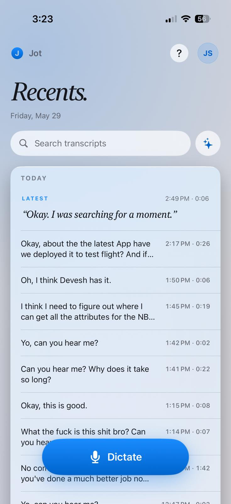
Recents · home

Keyboard · live dictation
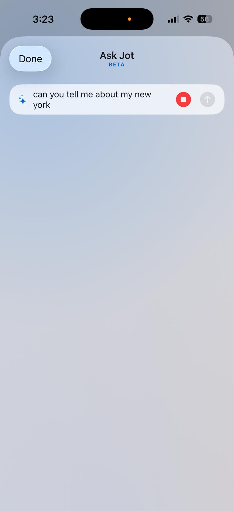
Ask Jot · voice
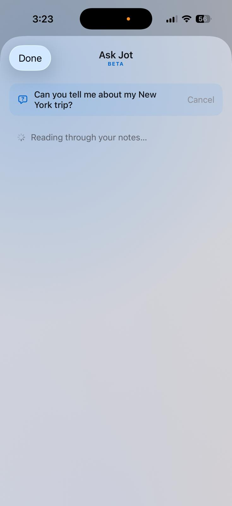
Ask Jot · answering
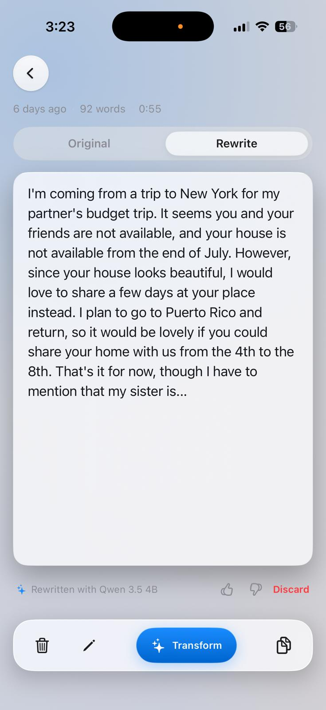
Transcript · Rewrite
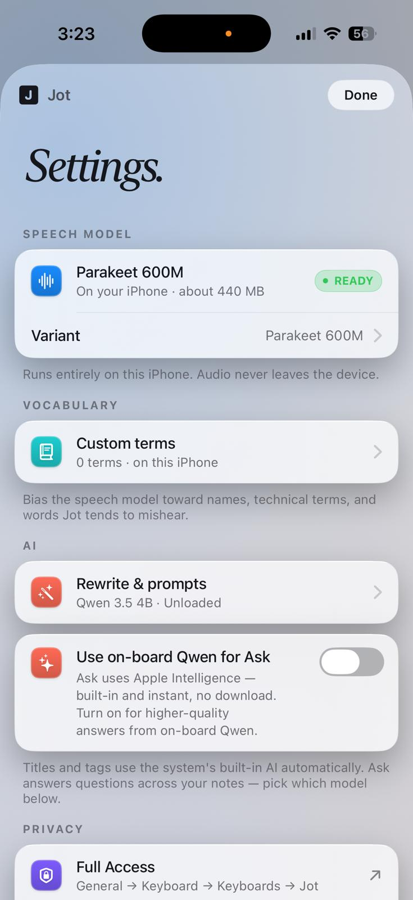
Settings · top
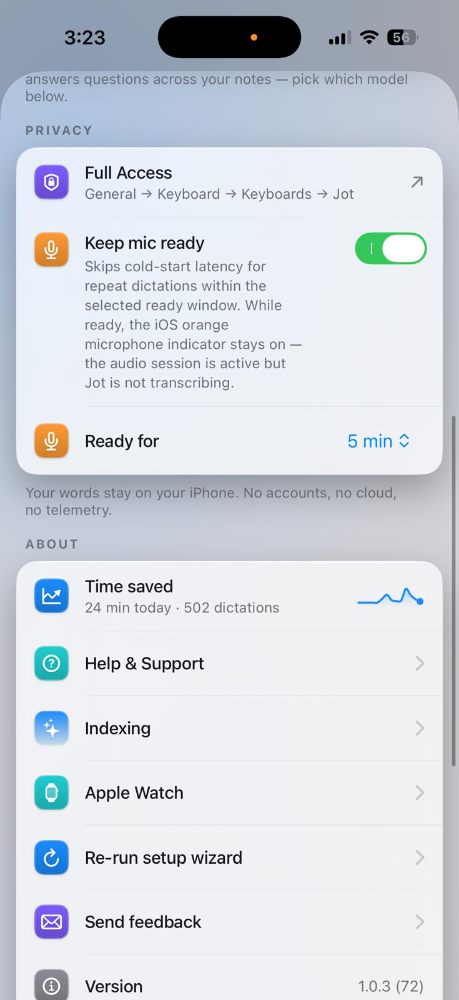
Settings · Privacy
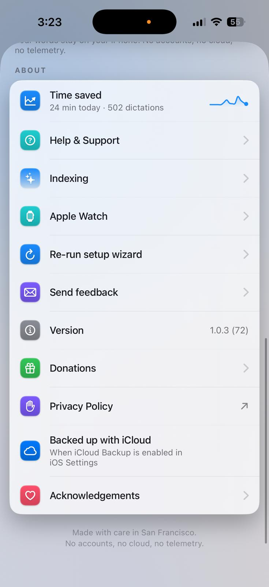
Settings · About
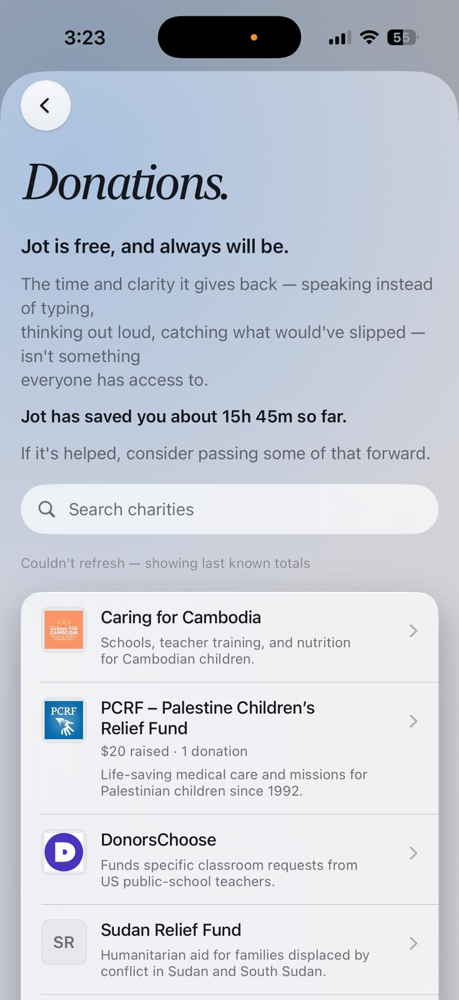
Donations
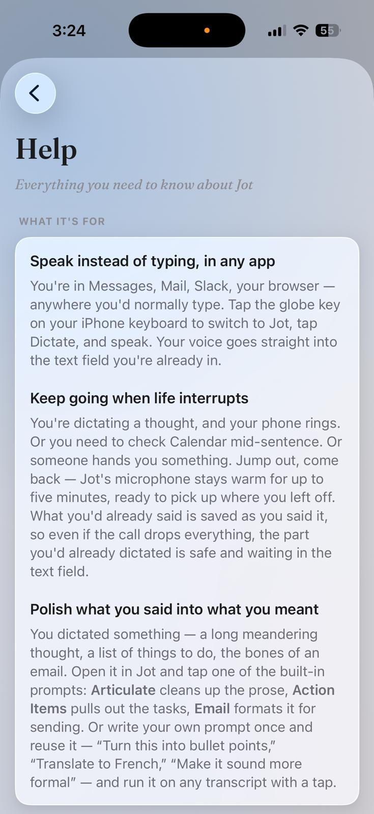
Help
watchOS — design system
blue (primary CTA)
#1A8CFF → #0064CC
jotAccent — waveform
#FF6B5C (recording amplitude bars)
jotRecord (Stop)
#FF3B30
jotRecordingDot
#E0173B + halo
jotPendingAmber
system .orange
jotSyncSuccess
system .green
| watchCardRadius | 12 |
| watchCardPaddingH / V | 10 / 8 |
| watchPageGutter | 8 |
| watchRowSpacing | 6 |
| watchCardFill | primary .06 (no material) |
| watchHairline | primary .10 · 0.5px |
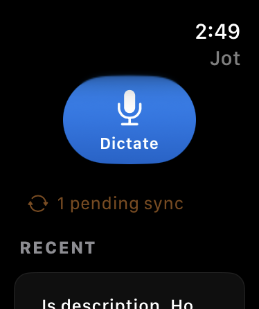
Watch · home
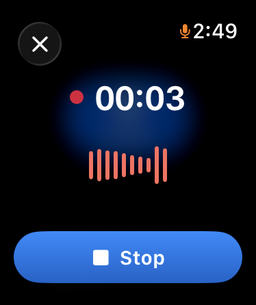
Watch · recording
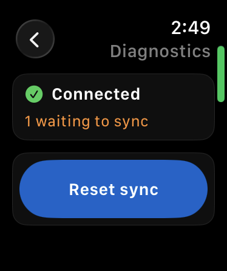
Watch · diagnostics
States: Dictate home (blue mic capsule + amber pending-sync + Recent list) · Recording (red dot + coral waveform + blue Stop) · Diagnostics (green "Connected" / amber "waiting to sync" / blue "Reset sync"). All on true-black, no materials/shadows.
Dark mode — adaptive token values
page base
#15171C
primary ink
white · .96
secondary ink
white · .62
caption ink
white · .46
Keyboard chrome (dark)
chrome top
#25252A
chrome bottom
#1A1A1D
stream / recents text
#9CB3E5
glass fill
rgba(70,72,82,.62)
key fill
rgba(110,114,126,.42)
return key
rgba(105,110,124,.7)
Brand / status / semantic-tile colors (blue, coral, green, the icon tiles) don't change in dark mode — only the page surface, text inks, glass, and keyboard chrome adapt.